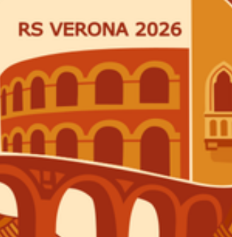

Team Building
Friday, 23 October · 10:30
Venue to be confirmedFull schedule →
RS Verona2026 Participant hubEuropean Youth Parliament · Regional Session
Weaving local traditions into Europe’s future.
Four days of debate, teamwork and exchange in Verona, bringing together young people from Italy and across Europe.
Parlamento Europeo Giovani — APS
Participant essentials
This hub will be updated as venues, menus and practical arrangements are confirmed.
Friday, 23 October · 10:30
Venue to be confirmedFull schedule →Menus, dietary notes, addresses and transfer details will be added here.
View details →Find the Event Safe Persons, the National Committee and the session mailbox.
View contacts →Programme
Times may be adjusted during the event. Check this page for the latest version.
22 Oct 2026
23 Oct 2026
24 Oct 2026
25 Oct 2026
Food & venues
Menus and allergen information will be published once confirmed. Please communicate dietary requirements through the official form.
Venue addresses, maps and transfer instructions will be added to the Welcome Booklet and this page.
Check-in times, room arrangements and house rules will be shared with participants before arrival.
Participant library
Booklets and academic resources will be available here as soon as they are published.
Who we are
The organising team works with EYP Italy to prepare the session and support participants throughout the event.
Sapienza University · Physics
Liceo Grigoletti
After Verona
EYP Italy organises regional, national and international events throughout the year. Delegates can continue as participants, volunteers and officials.
Visit EYP Italy ↗The host city
A city shaped by history, craftsmanship and exchange—an ideal setting for a session about local traditions and Europe’s future.
Useful landmarks and meeting points.
Food, craft and stories from Verona.
Transport, safety and practical tips.
Contacts